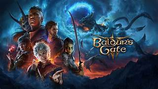

Baldur’s Gate
Baldur’s Gate é uma clássica série de RPG inspirada em Dungeons & Dragons, conhecida por suas histórias ricas e decisões significativas.
Os jogos combinam narrativa ramificada com combate tático baseado em regras de RPG de mesa, proporcionando profundidade para jogadores que gostam de roleplay.